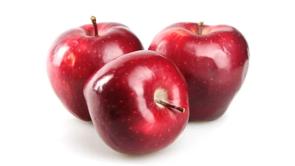
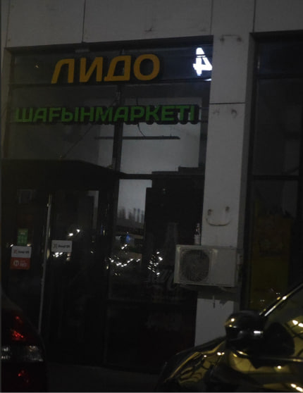

YOUR EVERYDAY STARTS HERE
Good food.
Close to home.
From the morning milk to tonight’s dinner. Find your essentials, build a list and make your next visit a little easier.
50 products · 5 everyday categories · One simple list

Browse five everyday categories.
Save favourites and build your shopping list.
Confirm availability with the shop.
THE EVERYDAY EDIT
What’s on your list?
Find your essentials by category. The prices are recorded references, ready to help you plan.
About Us

Opening Hours
Lido Grocery Store is open 24/7, which makes it convenient for customers who need to buy groceries early in the morning, during the day, or late at night.
The store can be used both for quick purchases and for larger everyday shopping.
About This Website
Store information and photographs come from the team visit. Catalogue names and reference prices come from Galmart Astana listings recorded on 2 November 2026. Confirm current prices and availability with Lido. This site prepares a local shopping list, not an online order.